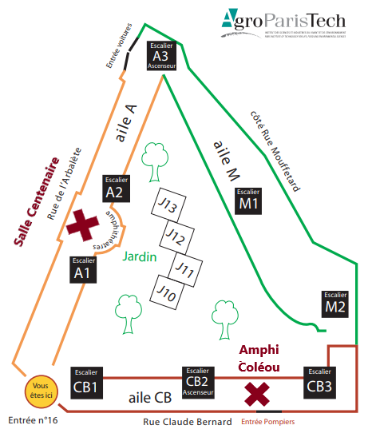

Members of the PhD Defense Jury
| Reviewer | Assistant Professor - HDR Catherine Faron Zucker |
University of Nice Sophia Antipolis |
| Reviewer | Professor Mathieu d'Aquin |
National University of Ireland Galway |
| Examiner | Research Scientist Harry Halpin |
Massachusetts Institute of Technology |
| Examiner | Professor Pascal Molli |
Nantes University |
| Examiner | Professor Sarah Cohen Boulakia |
Paris-Sud University |
| Thesis Director | Professor Juliette Dibie |
AgroParisTech |
| Thesis Director | Assistant Professor - HDR Nathalie Pernelle |
Paris-Sud University |
| Thesis Supervisor | Assistant Professor Fatiha Saïs |
Paris-Sud University |
| Thesis Supervisor | Assistant Professor Liliana Ibanescu |
AgroParisTech |
Date: Friday 30th of November 2018 at 14h30 Location: 16 rue Claude Bernard, 75005, Paris
How to get here:
The PhD defense will be held in the Coléou room. It is located in the Claude Bernard (CB) wing of the AgroParisTech building. Arriving from the main entrance of AgroParisTech (16 rue Claude Bernard and represented by the yellow circle in the figure below), the CB wing is accessed from the right hand side. The Coléou room is located at the same level of the main entrance (i.e. no need to take the stairs). The defense will be followed by celebratory drinks at the Centenaire room, located in the wing A of the building, and also at the same level of the main entrance. 